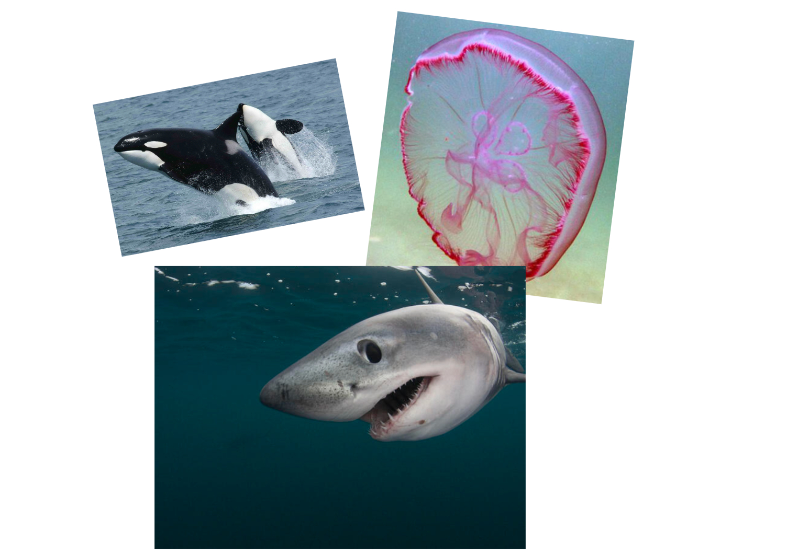

Under the Sea
Brief Tour of the Sea!
Before we get started!
Ecologists tend to divide aquatic biomes based on the water depth, water flow, and salinity. Many aquatic biomes exist! Some examples are rivers, lakes, wetlands, coral reefs, and open ocean. Today, we will be exploring the sea, which is includes the coral reef and open ocean biomes!
The open ocean biome can be separated into two main sections based on the amount of sunlight present in the water. These sections are known as the Photic and Aphotic zone. With that being said, let's dive in!
This zone spans from 0 meters to 200 meters. In this region, there is abundant sunlight, allowing many organisms, such phytoplankton and plants, to transform light energy into organic molecules (photosynthesis).

Given the abundant sunlight, you will see one of the most complex and biodiverse biomes: coral reefs. As the name implies, corals are an integral part of this biome. However, have you ever considered what a coral is?
Corals are actually animals. What we see as a coral is actually a colony polyp colony. Interestingly, corals can only exist in areas of high sunlight because they exhibit a mutualistic relationship with algae. Without the algae, the coral perishes, which now happens often due to global warming.
In the aphotic zone, the sunlight is unable to reach this depth, meaning that producers do not exist here. Most organisms can survive without sunlight. In fact, producers in these depths start perform chemosynthesis, the process of harnessing chemical energy to produce organic molecules.
A common example of chemotrophs are the bacteria that live near the hydrothermal vents in the ocean floor. These bacteria transform the chemical energy from hydrogen sulfide and convert it into organic molecules.
There other adapations that organisms have evolved to survive. For example, sperm whales hunt in the dark because their prey (squids) exist at these depths. They have deloped echolocation to help them find their prey without the use of sight!
If we go any deeper, we will reach the bikini bottom.
**Facts Presented in this Page May NOT be Accurate to Reality**